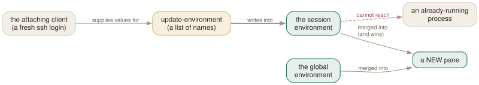

Day 14
Environment, terminals, and the finished config
The last sharp edges — stale ssh agents, true colour, extra servers — and what to read next.
By the end of today you can
- fix the stale $SSH_AUTH_SOCK and $DISPLAY problem for good
- get true colour, styled underlines and clipboard support working deliberately
- run more than one tmux server, and know when that is the right answer
The environment problem
This is the tmux annoyance that survives longest, because it looks like a tmux bug and is really a fact about processes: you reattach to a session from a new ssh connection, and every shell that was already running still has the old connection's $SSH_AUTH_SOCK. Your agent is unreachable, git push asks for a password, and nothing you do to tmux fixes the shells that already exist.

tmux keeps two environments: a global one copied from wherever the server was started, and a session one per session. A new pane gets the merge of the two, with the session winning. The update-environment option lists the variables to refresh from the attaching client into the session environment — so a new window after a fresh login is fine.
$ tmux show-environment -g | grep SSH
$ tmux show-environment | grep SSH # this session's
$ tmux set-environment -g FOO bar # -u unsets, -h hides from processes
For the shells that already exist, the fix is indirection — put a stable path in the variable, and move the symlink on each login:
# in ~/.bashrc or ~/.zshrc, before anything uses the agent
if [ -n "$SSH_AUTH_SOCK" ] && [ "$SSH_AUTH_SOCK" != "$HOME/.ssh/agent.sock" ]; then
ln -sf "$SSH_AUTH_SOCK" "$HOME/.ssh/agent.sock"
fi
export SSH_AUTH_SOCK="$HOME/.ssh/agent.sock"
Now every shell — old and new — holds the same path, and re-pointing the symlink on login fixes them all at once. This is not a tmux feature; it is the standard answer, and it is worth the four lines.
Telling tmux what your terminal can do
Two rules, and most colour problems are one of them being broken.
- Outside tmux,
$TERMdescribes your real terminal (xterm-256color,alacritty,foot). - Inside tmux,
$TERMmust be ascreenortmuxderivative — set bydefault-terminal, andtmux-256coloris the right value. tmux is emulating a terminal for the programs in the panes, and it has to describe itself accurately, not the terminal it happens to be displayed on.
Between those, terminal-features is how tmux learns what the outer terminal can do. It is a list of glob patterns and feature names:
RGB 24-bit colour usstyle coloured / styled underlines
clipboard OSC 52 clipboard hyperlinks OSC 8 links
cstyle set the cursor style ccolour set the cursor colour
focus focus reporting title set the window title
sync synchronised updates sixel SIXEL graphics
margins overline strikethrough rectfill extkeys progressbar osc7
set -sa terminal-features ",*256col*:RGB:usstyle:clipboard:hyperlinks"
set -sa terminal-overrides ",*256col*:Tc" # the older, terminfo-level lever
Note the -a: these are arrays and you want to add to them, not replace tmux's own entries. Check what tmux believes with tmux display -p '#{client_termfeatures}', and do not claim a feature your terminal does not have — the failure mode is garbage on screen rather than a graceful fallback.
More than one server
Everything in this course has assumed one server on the default socket. -L name uses a different socket in the same directory; -S path an explicit path. Servers cannot see each other at all — separate sessions, separate options, separate everything.
$ tmux -L bg new -d -s builds # a server for long-running jobs
$ tmux -L bg ls # only visible with the same -L
$ tmux -f /tmp/try.conf -L test new # test a config in isolation
$ tmux -L test kill-server # and throw it away
That third line is the one to remember. Trying a new configuration in a throwaway server means never again wondering whether the thing you just pasted is about to eat the session you have been running for three weeks.
Two server options govern the lifecycle: exit-empty (on by default — the server exits when the last session goes) and exit-unattached (off, and should stay off; turning it on kills your sessions when you detach, which is the opposite of the point). For a server that must survive with nothing in it, turn exit-empty off and start it with tmux start-server.
Control mode, briefly
tmux -CC is not for humans. It turns the client into a line protocol: you send commands, tmux replies with %begin … %end blocks and emits asynchronous notifications — %output, %window-add, %session-changed, %layout-change — whenever anything happens.
It exists so that a graphical terminal can present tmux windows as its own native tabs, and so that programs can drive a server without screen-scraping. The piece worth remembering is refresh-client -B name:what:format: a control-mode client can subscribe to a format and be notified when its value changes, which is how you build an external status widget that does not poll.
The finished configuration
Your ~/.tmux.conf is now perhaps sixty lines, assembled over ten days, and every block has a comment saying why it is there. The whole file is here if you want to diff it against yours.
Read it once, end to end, and delete anything you cannot justify. A configuration you understand and half-use beats one you copied and are afraid to touch — that is the entire argument for having built it this way instead of pasting somebody's 400-line dotfile on Day 1.
What comes next
Three honest directions, in the order I would take them.
- Live in it for a month
- Nothing here is knowledge; it is all habit. The keys you have not used by October are the keys you did not need, and the ones you fumble are the ones to rebind.
- Write the plugin instead of installing it
- The popular tmux plugins are mostly assemblies of what Days 9 to 13 covered. A session manager is a popup and
switch-client. A layout restorer is#{window_layout}and a script. If you do want the ecosystem,tpmandtmux-resurrectare the well-trodden ones — but read them first; they are short, and now they will read as ordinary tmux commands. - Read the man page properly
- Specifically the OPTIONS section, and the FORMATS variable table. Two weeks ago both were walls of text. They should now read as reference material for a system you know the shape of. That was the real objective here: not fourteen lists of keys, but enough structure that
man tmuxbecomes usable.
That is the course. Fourteen days ago tmux was a thing that kept shells alive over ssh. It is now a small, consistent system you can bend: a server holding sessions, a command language, a format language, key tables, hooks, and a config you wrote yourself.
New vocabulary
Keys
| Key | Does |
|---|---|
| C-b~ | Show the message log — every error tmux has shown you and you missed. |
Commands
| Command | Does |
|---|---|
tmux -L work | Use a separate server on the socket named work. |
tmux -S /path/sock | Use a server at an explicit socket path. |
tmux -f test.conf -L test | Try a config in an isolated server — no risk to your real one. |
tmux -CC | Control mode: a text protocol for programs that drive tmux. |
tmux -v | Log the client and server to files in the current directory. |
show-environment -g | The global environment new panes inherit. |
set-environment -g NAME value | Set it. -u unsets, -h hides it from processes. |
show-messages | The message log, behind C-b~. Alias showmsgs. |
kill-server | End everything on this socket. |
Options
| Option | Does |
|---|---|
update-environment | Which variables are refreshed from the client on attach. |
terminal-features | Tell tmux what your terminal can do: RGB, clipboard, usstyle, hyperlinks… |
terminal-overrides | Override individual terminfo capabilities. The older, lower-level lever. |
exit-empty | Server exits when the last session goes. On by default. |
exit-unattached | Server exits when the last client detaches. Off, and leave it off. |
default-shell | The shell new panes run; default-command overrides it entirely. |
set-titles | Set the outer terminal's title; set-titles-string is the format. |
Today's configappend to ~/.tmux.conf
Refresh these from the client every time a session is created or reattached, so a new window after a fresh ssh login has a working agent and display.
set -g update-environment \
"SSH_AUTH_SOCK SSH_CONNECTION SSH_AGENT_PID DISPLAY WAYLAND_DISPLAY XAUTHORITY"
TERM inside tmux must be a screen/tmux derivative - this is not the place to name your real terminal. Then tell tmux what that real terminal can actually do. Only claim RGB if it is true: check with tmux display -p '#{client_termfeatures}' first.
set -s default-terminal "tmux-256color"
set -sa terminal-features ",*256col*:RGB:usstyle:clipboard:hyperlinks"
set -sa terminal-overrides ",*256col*:Tc"
OSC 52: let a copy inside tmux set the clipboard of the terminal you are sitting at, which is the only mechanism that works through ssh. 'external' also stops applications inside panes from silently overwriting your tmux buffers.
set -s set-clipboard external
Set the outer terminal's title from tmux, so a window switcher shows something useful.
set -g set-titles on
set -g set-titles-string "#S: #W - #{b:pane_current_path}"
Reload with tmux source-file ~/.tmux.conf and watch for errors in the status line.
Drillsdo these in a real terminal, today
Self-check
Answer out loud first, then unfold.
You reattach to a week-old session over a fresh ssh connection and git push cannot reach your ssh agent. Why does update-environment not fix it?
Because it updates the session environment — the environment handed to processes created from now on. Shells that were already running were given the old $SSH_AUTH_SOCK when they started, and nothing can reach into a running process and change its environment.
The durable fix is indirection: point $SSH_AUTH_SOCK at a stable symlink and re-point the symlink on each login. The variable in the old shell then still holds the right path.
Colours look wrong inside tmux but fine outside. Where do you look first?
At three things, in order. $TERM outside tmux (it should describe your real terminal), default-terminal inside (it must be a screen or tmux derivative — tmux-256color), and terminal-features (does tmux know your terminal can do RGB?). Setting $TERM to something exotic inside tmux, which people do try, breaks things rather than fixing them.
When is a second tmux server the right answer?
When you want a genuinely separate world: long-running background jobs that must not be killed by a stray kill-server; testing a configuration without endangering your working sessions; a service account's sessions kept apart from your own. -L name picks a socket in the standard directory, -S path an explicit path. It is not a way to organise projects — sessions already do that, and they can see each other.
What is control mode for, and why should you know it exists?
tmux -CC turns tmux into a line-based protocol: commands in on stdin, blocks of output and asynchronous %notification lines out. It is how a GUI terminal can render tmux windows as its own native tabs, and how a program can watch a server without polling. You will rarely type it, but it explains a whole category of integrations — and refresh-client -B lets such a client subscribe to a format and be told when it changes, which is the cleanest way to build a status widget outside tmux.
Cheat sheet
update-environment "SSH_AUTH_SOCK … DISPLAY" # refreshed on attach — for NEW panes
old shells keep the old value: use a stable ~/.ssh/agent.sock symlink
default-terminal tmux-256color # inside tmux: a screen/tmux TERM
set -sa terminal-features ",*256col*:RGB:usstyle:clipboard:hyperlinks"
tmux display -p '#{client_termfeatures}' # what tmux believes
tmux -L name … # a separate server (own socket, own world)
tmux -f try.conf -L test new # test a config with nothing at risk
tmux -CC # control mode; refresh-client -B subscribes to a format
C-b ~ # the message log — where the errors you missed went
Everything through Day 14
Keys
| Key | Does |
|---|---|
| C-bd | Detach this client. The session keeps running. |
| C-b$ | Rename the current session. |
| C-b? | List every key binding. q to leave. |
| C-b: | Open the tmux command prompt. |
| C-bt | Show a clock — a harmless way to prove the prefix works. |
| C-bC-b | Send a literal C-b to the program in the pane. |
| C-bc | Create a window at the lowest free index. |
| C-b, | Rename the current window — and pin the name. |
| C-bn | Next window by index. |
| C-bp | Previous window by index. |
| C-bl | Back to the last window you were in. The one to actually learn. |
| C-b0 | Jump straight to window 0 (likewise 1 … 9). |
| C-b' | Prompt for a window index — for windows above 9. |
| C-bw | Choose a window from an interactive tree with previews. |
| C-b& | Kill the current window, after a confirmation. |
| C-b. | Move the current window to a different index. |
| C-bi | Flash some information about the current window. |
| C-b% | Split left/right. The |-shaped key gives you a |-shaped border. |
| C-b" | Split top/bottom. |
| C-bLeft | Move to the pane to the left (likewise Right, Up, Down). |
| C-bo | Next pane in creation order. |
| C-b; | The previously active pane — the C-bl of panes. |
| C-bq | Flash the pane numbers; press a digit while they show to jump there. |
| C-bz | Zoom: this pane fills the window. Press again to restore. |
| C-bx | Kill this pane, after a confirmation. |
| C-bSpace | Cycle to the next preset layout. |
| C-bM-1 | even-horizontal — side by side in a row. |
| C-bM-2 | even-vertical — stacked in a column. |
| C-bM-3 | main-horizontal — one big pane on top. |
| C-bM-4 | main-vertical — one big pane on the left. |
| C-bM-5 | tiled — a grid. |
| C-bE | Spread the current pane and its neighbours out evenly. |
| C-bC-Left | Resize by one cell (hold to repeat). M-Left does five. |
| C-b{ | Swap this pane with the previous one; C-b} with the next. |
| C-bC-o | Rotate every pane through the layout; C-bM-o rotates back. |
| C-b* | Open a floating pane over the window — hovers above the layout. |
| C-b[ | Enter copy mode at the bottom of the history. |
| C-bPageUp | Enter copy mode already scrolled one page up. |
| C-b] | Paste the most recent buffer into this pane. |
| C-b= | Choose which buffer to paste, from a list with previews. |
| C-b# | List the paste buffers. |
| C-b- | Delete the most recent buffer. |
| q | In copy mode: leave. (Escape in emacs mode.) |
| /? | vi mode: search forward / backward; n and N repeat. |
| C-sC-r | emacs mode: incremental search forward / backward. |
| Space | vi mode: start a selection. C-Space in emacs mode. |
| v | vi mode: toggle rectangle (block) selection. R in emacs mode. |
| Enter | vi mode: copy the selection and leave. M-w in emacs mode. |
| gG | vi mode: top / bottom of the history. |
| C-bC | Customize mode: browse and change every option and key, with descriptions. |
| C-bR | Reload ~/.tmux.conf — after you add today's binding. |
| C-bs | Choose a session from the tree — with previews, tagging and filtering. |
| C-b( | Switch this client to the previous session. |
| C-b) | Switch this client to the next session. |
| C-bL | Switch back to the last session. The C-bl of sessions. |
| C-bD | Choose a client from a list and detach it. |
| C-b$ | Rename the current session. |
| C-b/ | Describe a key: press it and tmux tells you what it is bound to. |
| C-b? | List every binding in every table — really list-keys -N. |
| C-bM-n | Go to the next window with an alert. |
| C-bM-p | Go to the previous window with an alert. |
| C-bt | The clock — which is really clock-mode, styled by clock-mode-colour. |
| C-bm | Mark this pane. Marked panes are addressable as '~' or {marked}. |
| C-bM | Clear the mark. |
| C-b! | Break this pane out into a window of its own. |
| C-b< | The window menu — swap, kill, rename, new. Try it once. |
| C-b> | The pane menu — split, swap, mark, kill, respawn. |
| C-bf | Search every window for text, by name, title or visible content. |
| C-b@ | Join the marked pane into this window (today's binding). |
| C-bC-g | Scratch shell in a popup (today's binding). |
| C-bC-j | Fuzzy session switcher in a popup (today's binding). |
| C-bC-n | Prompt for a name and create a session (today's binding). |
| C-bC-s | Your own session menu (today's binding). |
| C-b~ | Show the message log — every error tmux has shown you and you missed. |
Commands
| Command | Does |
|---|---|
tmux | Start the server if needed and create a session, attached. |
tmux new -s work | Create a session named work. |
tmux new -A -s work | Attach to work, creating it only if absent. |
tmux ls | List sessions on this server. Alias for list-sessions. |
tmux attach -t work | Attach this terminal to work. |
tmux attach -d -t work | Attach, detaching any other client first. |
tmux detach | Detach the current client, from inside or by target. |
tmux rename-session api | Rename the current session. |
tmux kill-session -t work | Destroy a session and everything in it. |
tmux kill-server | Destroy every session. The nuclear option. |
new-window | Create a window. Alias neww. |
new-window -n logs | Create it with a fixed name. |
new-window -c ~/src/api | Create it with that working directory. |
new-window -d | Create it but do not switch to it. |
new-window -a -t 2 | Insert after window 2, shifting the rest along. |
rename-window api | Rename the current window. |
select-window -t :3 | Switch to window 3 of the current session. |
last-window | Switch to the previously current window. |
kill-window -t :logs | Kill a window by name. |
list-windows | List windows in the session. Alias lsw. |
choose-tree -w | The interactive picker behind C-bw. |
split-window -h | Split left/right. Alias splitw. |
split-window -v | Split top/bottom. The default if neither is given. |
split-window -c ~/src | Start the new pane in that directory. |
split-window -l 30% | Give the new pane 30% of the space (-l 20 for cells). |
split-window -b | Put the new pane before — above or to the left of — the old one. |
split-window -f -h | Split the full window height, not just the current pane. |
select-pane -L | Move to the pane on the left (-R -U -D likewise). |
select-pane -t 2 | Move to pane 2 of this window. |
last-pane | Back to the previously active pane. |
resize-pane -Z | Toggle zoom. |
resize-pane -x 100 -y 30 | Resize to an absolute size, cells or %. |
select-layout tiled | Apply a named layout. |
select-layout -E | Spread evenly (what C-bE runs). |
select-layout -o | Undo the most recent layout change. |
list-panes | List panes with index, size and command. Alias lsp. |
kill-pane -a | Kill every pane except this one. |
swap-pane -D | Swap with the next pane, keeping focus behaviour sane. |
copy-mode | Enter copy mode; -u starts a page up, -e exits at the bottom. |
send-keys -X begin-selection | How every copy-mode key is implemented. -X means “to the mode”. |
list-buffers | Show the buffer stack. Alias lsb. |
set-buffer "text" | Put a literal string into a buffer from a script. |
load-buffer file | Read a file into a buffer (- for stdin). |
save-buffer file | Write a buffer out to a file (- for stdout). |
show-buffer | Print the newest buffer. |
paste-buffer -t :1.0 | Paste into a specific pane, not necessarily this one. |
delete-buffer -b name | Remove one buffer. |
capture-pane -p -S -3000 | Dump the last 3000 lines of history to stdout. |
clear-history | Throw away a pane's scrollback. Alias clearhist. |
set-option -g name value | Set a global session option. Alias set. |
set-option -w name value | Set a window option (for the current window). |
set-option -p name value | Set a pane option (for the current pane). |
set-option -s name value | Set a server option. |
set-option -u name | Unset, so the value is inherited again. |
set-option -a name value | Append to a string or style option instead of replacing it. |
show-options -g | Show global session options. Alias show. |
show-options -A | Show them including inherited values, marked with *. |
show-options -gv history-limit | Print just the value of one option. |
source-file ~/.tmux.conf | Run a file of tmux commands now. Alias source. |
customize-mode | The interactive option browser behind C-bC. |
new-session -d -s api | Create a session in the background and stay where you are. |
new-session -A -s api | Attach if it exists, create if it does not. |
new-session -c ~/src/api -s api | Create with a starting directory. |
switch-client -t api | Move this client to another session, without detaching. |
switch-client -l | Back to the previous session. |
has-session -t api | Exit 0 if it exists. The if in every wrapper script. |
attach-session -d -t api | Attach here and detach whoever else was looking. |
list-clients | Which terminals are attached to what. Alias lsc. |
detach-client -s api | Detach every client from that session. |
kill-session -a | Kill every session except the current one. |
choose-tree -Zs | The session picker behind C-bs. |
tmux neww \; splitw -h | Two commands in one invocation. Note the escaped semicolon. |
display-message -p '#{pane_id}' | Print a value to stdout instead of the status line. |
list-panes -a | Every pane on the server, not just this window. |
list-windows -a | Every window on the server. |
list-sessions -F '#{session_name}' | One field per line — the shape scripts want. |
list-commands | Every command tmux knows, with its synopsis. Alias lscm. |
list-commands neww | The synopsis for one command. |
bind-key c new-window | Bind in the prefix table. Alias bind. |
bind-key -n M-Left select-pane -L | Bind without a prefix (-n = -T root). |
bind-key -r H resize-pane -L | Repeatable: keep tapping without re-pressing the prefix. |
bind-key -N "note" x cmd | Attach a note, shown by C-b?. |
bind-key -T mytable g cmd | Bind in a table of your own. |
unbind-key -T prefix x | Remove a binding. Alias unbind. |
list-keys -T copy-mode-vi | Read a whole mode as data. Alias lsk. |
list-keys -N | Only keys with notes, in a readable form. |
send-keys -X copy-selection | Send a command into a mode. |
send-prefix | Pass the prefix key through to the program. |
switch-client -T mytable | Make the next key be looked up in another table. |
display-message -p '#{…}' | Evaluate a format and print it. The echo of tmux. |
display-message -a | List every format variable with its current value. |
display-message -v '#{…}' | Show how the format is parsed, step by step. |
list-panes -f '#{…}' | Filter a listing by a format that evaluates true. |
if-shell -F '#{…}' cmd | Run a command when a format is non-empty and non-zero. |
set-option -F name '#{…}' | Expand the format now and store the result. |
refresh-client -S | Redraw the status line right now. |
show-options -g status-format | Read the default status line's own definition. |
display-menu -T title name key cmd | Pop up a menu — what the status line's mouse bindings use. |
send-keys -t %7 'make' Enter | Type into a pane from outside. Alias send. |
send-keys -l 'literal $text' | Send characters literally, without key-name lookup. |
send-keys -N 5 Up | Repeat a key five times. |
run-shell 'cmd' | Run a shell command with no window; output shown in view mode. Alias run. |
run-shell -b 'cmd' | Same, in the background, not blocking the command queue. |
if-shell 'test -d .git' 'cmd' 'other' | Branch on a shell command's exit status. |
if-shell -F '#{…}' 'cmd' | Branch on a format, with no shell at all. |
pipe-pane -o 'cat >>log' | Copy everything a pane prints to a command; -o toggles. |
capture-pane -p -S - | A pane's whole history on stdout. |
respawn-pane -k 'cmd' | Restart the command in a pane, killing the old one. |
wait-for -S name | Wake up a client blocked on wait-for name. |
select-pane -m | Mark a pane; -M clears the mark. |
break-pane -d | Pane becomes its own window; -d stays put. Alias breakp. |
join-pane -t :2 | Move a pane into another window. Alias joinp. |
join-pane -h -s %7 -t :1 | Move pane %7 beside the target, splitting left/right. |
move-pane -b -t %3 | The same command under another name, -b to insert before. |
link-window -s api:2 -t infra: | Make one window appear in a second session. |
unlink-window -t infra:3 | Remove it from one session, leaving the others. |
move-window -r | Renumber the windows, closing gaps. |
swap-window -t :1 | Exchange two windows' positions. |
swap-pane -s %3 -t %5 | Exchange two panes. |
find-window -Z text | Search names, titles and visible content. Alias findw. |
choose-tree -Z | The full tree; t tags, : runs a command on every tagged item. |
set-hook -g name 'cmd' | Run a command when something happens. |
set-hook -g name[1] 'cmd' | Hooks are arrays; index them to keep several. |
set-hook -u -g name | Remove a hook. |
set-hook -R name | Fire a hook right now, by hand. |
show-hooks -g | List the hooks that are set. |
display-popup -E 'cmd' | Run a command in a box over the panes; -E closes it on exit. Alias popup. |
display-menu -T title n k cmd | Show a menu of name/key/command triples. Alias menu. |
command-prompt -p 'name:' 'cmd %%' | Ask for input; %% is the answer. |
command-prompt -I '#S' 'cmd %%' | Pre-fill the prompt with something. |
confirm-before -p 'sure? (y/n)' cmd | Ask before doing something irreversible. |
display-message -d 0 'text' | A message that stays until a key is pressed. |
tmux -L work | Use a separate server on the socket named work. |
tmux -S /path/sock | Use a server at an explicit socket path. |
tmux -f test.conf -L test | Try a config in an isolated server — no risk to your real one. |
tmux -CC | Control mode: a text protocol for programs that drive tmux. |
tmux -v | Log the client and server to files in the current directory. |
show-environment -g | The global environment new panes inherit. |
set-environment -g NAME value | Set it. -u unsets, -h hides it from processes. |
show-messages | The message log, behind C-b~. Alias showmsgs. |
kill-server | End everything on this socket. |
Options
| Option | Does |
|---|---|
automatic-rename | Window renames itself after the running command. On by default. |
automatic-rename-format | The format used when it does. Defaults to the pane's command. |
allow-rename | Whether a program in the pane may rename the window by escape sequence. |
main-pane-width | Width of the big pane in the main-vertical layouts. Accepts %. |
main-pane-height | Height of the big pane in the main-horizontal layouts. |
tiled-layout-max-columns | Cap the columns in the tiled layout; 0 means no cap. |
mode-keys | vi or emacs key bindings inside copy mode. Default emacs. |
history-limit | Lines of scrollback kept per pane. Default 2000, which is stingy. |
copy-command | Shell command that bare copy-pipe pipes to — your clipboard tool. |
set-clipboard | Whether tmux sets the terminal's clipboard with OSC 52. |
word-separators | What counts as a word boundary for w and b. |
wrap-search | Whether searches wrap around the end of the history. On by default. |
base-index | Index the first window gets. Default 0. |
pane-base-index | Index the first pane gets. Default 0. A window option. |
renumber-windows | Close the gaps in window indices when one is killed. |
escape-time | Milliseconds tmux waits to decide whether Escape began a key sequence. |
focus-events | Pass terminal focus in/out through to the programs in panes. |
display-time | How long status line messages stay up. 750 ms by default. |
default-terminal | The $TERM new panes get. Must be a screen/tmux derivative. |
detach-on-destroy | What a client does when its session dies. off moves it to another session instead. |
destroy-unattached | Destroy a session once the last client leaves. Off by default, and rightly. |
default-size | Size for sessions created detached, when no client dictates one. |
window-size | Whether a window sizes to the largest, smallest or latest attached client. |
aggressive-resize | Size each window to the clients actually viewing it, not the whole session. |
command-alias | Server option: an array of your own command aliases. |
prefix | The prefix key. None disables it entirely. |
prefix2 | A second prefix key, for when you want both C-b and C-a. |
repeat-time | Milliseconds the prefix stays live after a -r key. Default 500. |
initial-repeat-time | The same, for the first press of a repeat sequence. |
key-table | Which table a client starts in. The lever behind modal setups. |
pane-border-format | What is drawn on a pane's border line. |
pane-border-status | Where that line goes: off, top, bottom. |
automatic-rename-format | The format used to rename windows automatically. |
status | off, on, or 2–5 for a taller status line. |
status-position | top or bottom. |
status-style | The base style for the whole line. |
status-left | The left segment. A format. Truncated to 10 columns by default. |
status-left-length | How wide the left segment may be. Raise it before anything else. |
status-right | The right segment. Also a format, also length-limited (40). |
status-justify | Where the window list sits: left, centre, right, absolute-centre. |
status-interval | Seconds between redraws. 15 by default; matters if you use #(). |
window-status-format | How each window is drawn in the list. |
window-status-current-format | How the current one is drawn. |
window-status-separator | What goes between them. A space by default. |
window-status-style | Style for a window entry; -current-, -activity-, -bell-, -last- variants exist. |
monitor-activity | Flag windows where output appeared while you were away. |
monitor-bell | Flag windows that rang the terminal bell. |
monitor-silence | Flag windows that have been quiet for N seconds. |
visual-activity | Show a message instead of (or as well as) ringing the bell. |
activity-action | any / none / current / other — which windows count. |
remain-on-exit | Keep a pane open after its command exits: on, off, failed, key. |
remain-on-exit-format | The text shown at the bottom of a pane that has exited. |
default-command | What a new pane runs when nothing is specified. |
mouse | Master switch. Off by default; turned on back on Day 5. |
focus-follows-mouse | Moving the mouse into a pane selects it. Off by default. |
pane-scrollbars | off, modal (only in copy mode), or on. |
pane-scrollbars-position | left or right. |
pane-border-indicators | How the active pane's border is marked: colour, arrows, both, off. |
popup-style | Style for the popup's interior; popup-border-style for its edge. |
popup-border-lines | single, rounded, double, heavy, simple, padded, none. |
menu-style | Style for menus; menu-selected-style for the highlighted item. |
update-environment | Which variables are refreshed from the client on attach. |
terminal-features | Tell tmux what your terminal can do: RGB, clipboard, usstyle, hyperlinks… |
terminal-overrides | Override individual terminfo capabilities. The older, lower-level lever. |
exit-empty | Server exits when the last session goes. On by default. |
exit-unattached | Server exits when the last client detaches. Off, and leave it off. |
default-shell | The shell new panes run; default-command overrides it entirely. |
set-titles | Set the outer terminal's title; set-titles-string is the format. |